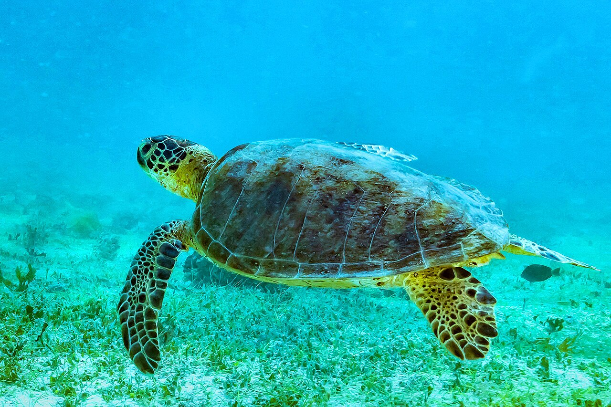

地球表面を覆う海
海は地球規模の気候と物質循環を支える巨大な生態系です。
命がつながる、青い世界。
海は、目に見えないプランクトンから巨大なクジラまで、多様な命を支えています。知ること、調べること、行動することから保全は始まります。
01 / UNDERSTAND
海に暮らす生物の種類だけでなく、遺伝子の違い、生態系の違い、そしてそれらのつながりまでを含む概念です。
海は地球規模の気候と物質循環を支える巨大な生態系です。
海は深さを持つため、生物が暮らせる空間の大部分を占めます。
生態系・種・遺伝子の多様性が互いに支え合っています。
複雑な構造が隠れ家と産卵場所を生み、多くの生物を支えます。
幼い魚の育成場となり、水質浄化や海岸保全にも役立ちます。
広大な回遊経路と未解明の生態系が、地球規模でつながっています。
THREE LEVELS OF BIODIVERSITY
海洋生物多様性は、単に魚の種類が多いことだけではありません。 生息環境、生物の種類、同じ種の中にある個体差という三つのレベルから成り立っています。
サンゴ礁、藻場、干潟、砂浜、外洋、深海など、 異なる環境と生物のつながりが存在することです。
例：サンゴ礁・干潟・深海・マングローブプランクトン、海藻、魚、貝、サンゴ、ウミガメ、クジラ、 微生物など、多様な種類の生物が暮らしていることです。
例：食べる・食べられる関係や共生関係同じ種類の生物でも、色、形、成長の速さ、 暑さや病気への強さなどに違いがあることです。
例：同じ種類の貝でも模様や性質が異なる生息地が失われると、そこに暮らす生物が減り、 個体数が減ることで遺伝的な違いも失われる可能性があります。 そのため、一つの珍しい生物だけではなく、生態系全体を守ることが重要です。
02 / FACE THE PROBLEM
気候変動、汚染、過剰利用、生息地の改変は単独ではなく、重なり合って海の生態系に影響します。

街や川から流れ出たプラスチックは遠くの海岸へ運ばれ、生物の誤食や絡まり、生息環境の悪化を引き起こします。
サンゴの白化、分布域の変化、季節的な生態リズムの乱れにつながります。
特定の種だけでなく、食物網全体のバランスを変える可能性があります。
干潟、藻場、砂浜など、繁殖や成長に重要な場所が失われます。
本来の生態系の関係を変え、長期的な影響を残すことがあります。

Photo: RobertoCostaPinto / CC BY-SA 4.0
CONNECTED OCEAN
ウミガメは成長や産卵のために長い距離を移動します。ある地域だけを守っても、移動先の海や砂浜が失われれば生き続けることはできません。
海洋生物の保全には、国境を越えた協力と、陸・川・海を一体として考える視点が必要です。
03 / OBSERVE & RECORD
大規模な研究だけが調査ではありません。同じ場所を同じ方法で観察し、記録を積み重ねることが変化の発見につながります。
海岸、河口、干潟など、安全に継続観察できる地点を選びます。
日時、天候、生物、ごみ、水温など、項目を統一して記録します。
写真や表を用いて変化を整理し、地域の人と結果を共有します。
04 / TAKE ACTION
完璧な行動を一度だけ行うより、小さな選択を継続する方が現実的です。
マイボトルや繰り返し使える容器を選び、ごみの発生そのものを抑えます。
海岸だけでなく、道路や川沿いの清掃も海洋ごみ対策になります。
資源管理や生態系への影響を考えた商品・店舗を調べて選択します。
見つけた生物や環境変化を記録し、正確な情報として周囲に伝えます。
MY OCEAN PLEDGE
下のボタンを押すと、この端末に選択が保存されます。
MINI QUIZ
正しいと思う答えを選んでください。
海洋生物多様性を守るために、特に重要な考え方はどれでしょうか。
05 / SHARE
ウェブサイトと統一したデザインで、報告書、展示パネル、三つ折りパンフレットの印刷用ページを用意しています。
06 / LATEST INFORMATION
海洋環境の状況や保全制度は変化しています。 国内外の公的機関が発信する最新情報を確認してみましょう。